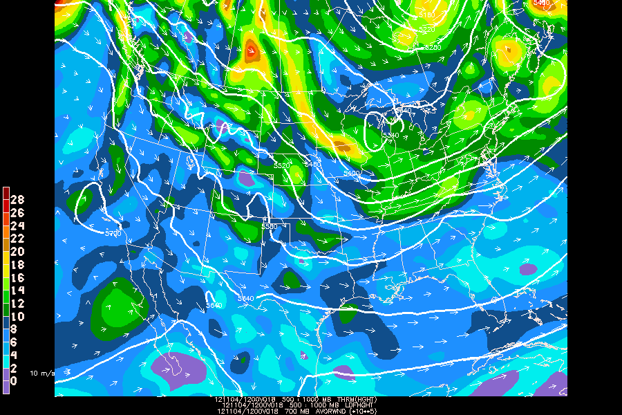

The Trenberth Formulation is sometimes used as an alternative to the quasi-geostrophic omega equation to infer vertical motion from the advection of geostrophic vorticity within a layer, in one term, rather than from two terms (temperature advection and differential vorticity advection), which may result in small and inaccurate vertical motion estimates when two large terms of opposite sign are present.
Using gdplot2, plot 700mb absolute vorticity avor(wnd), 1000-500mb layer thickness ldf(hght), and 1000-500mb thermal wind vectors in m/s thrm(hght) for the 18-hr GFS forecast to show regions of 700 mb vorticity advection by the thermal wind, which indicate rising motion in the layer:
GDFILE = gfs
GDATTIM = f018
GLEVEL = 700 ! 500:1000 ! 500:1000
GVCORD = pres
PANEL = 0
SKIP =
SCALE = 5 ! 0 ! 0
GDPFUN = avor(wnd) ! ldf(hght) ! thrm(hght)
TYPE = f ! c ! A
CONTUR = 3
CINT = ! 60
LINE = ! 31//3
FINT = 2/-4/30
FLINE = 28;28-13-1
HILO =
HLSYM =
CLRBAR = 1/V/ll
WIND = 0 ! ! am31/0.2///0.5
REFVEC = 10
TITLE = 1/-1 ! 1/-2 ! 1/-3
TEXT = 0.65/2//hw
CLEAR = n
GAREA = us
IJSKIP = 0 ! ! 1
PROJ = str/90;-100;0
MAP = 1
MSCALE =
LATLON = 0
DEVICE = xw
STNPLT =
SATFIL =
RADFIL =
IMCBAR =
LUTFIL =
STREAM =
POSN =
COLORS =
MARKER =
GRDLBL =
FILTER = no
